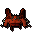

Your kills

Nothing claimed yet
Simulate a full-room kill to see K'ril and each bodyguard in separate loot windows.
K'ril Tsutsaroth
Tstanon Karlak
Balfrug Kreeyath
Zakl'n Gritch
Combined full-room dry calculator
How lucky are your drops?
Enter total rare drops from K'ril Tsutsaroth and all three bodyguards. Rates include four monsters per room.